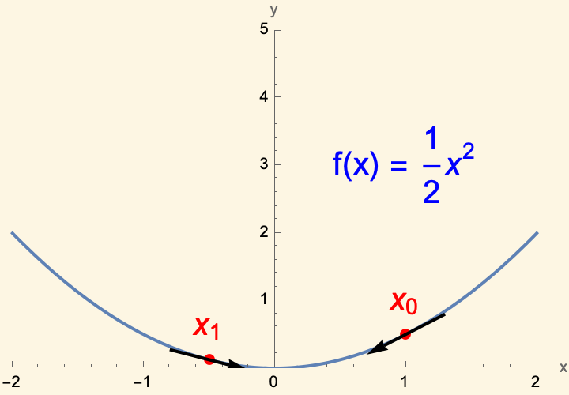

The Surprising Ubiquity of
Convex Optimization
Kevin Shu

Optimization is Everywhere

Rosen et al. 2021. Advances in Inference and Representation for Simultaneous Localization and Mapping. Annual Review Control, Robotics, and Autonomous Systems.

Serles et al. 2025. Ultrahigh Specific Strength by Bayesian Optimization of Carbon Nanolattices. Adv. Mater.

Issues with Optimization


Desiderata for Optimizers
- Computationally efficient
- Reliable
- Globally optimal
What is Convex Optimization?
Convex Set - The line segment between two points in the set is contained in the set.
Convex Function - The value of the function at the mean of two points is less than the mean of the values of the function at those points.

What is Convex Optimization?
Linear Programs

| $\min$ | $b^{\intercal} x$ |
| s.t. | $Ax = c$ |
| $x \in \R^n_{\ge 0}$ |
Conical Programs

| $\min$ | $b^{\intercal} x$ |
| s.t. | $Ax = c$ |
| $x \in K$ |
where $K$ is PSD cone, nonnegative orthant, second order cone...
Regression

| $\min$ | $\|Ax - b\|_p$ |
| s.t. | $x \in \R^n$ |
Why Convex Optimization?
- Computationally efficient
- Reliable
- Globally optimal
But not all optimization problems are convex!
Convex Reformulations
Example Problem
Minimize \[ x^{\intercal}Ax + 2b^{\intercal}x + c \] for a matrix $A \in \R^{n \times n}$ with the constraint $\|x\|^2 = 1$.
In general, neither the objective nor the constraint are convex.
Despite similarities to minimum eigenvalue problem, not easy to apply power method, etc.
Used in trust region methods and modeling ill-conditioned linear systems.
Convex Problem
Example Reformulation
We can manipulate the problem algebraically to read \[ \tr\left(\begin{pmatrix}c & b^{\intercal}\\ b & A\end{pmatrix}\begin{pmatrix}1 & x^{\intercal}\\x & xx^{\intercal}\end{pmatrix}\right) \] with the constraint $\tr(xx^{\intercal}) = 1$.
Convex Reformulations
Example Reformulation
We can reformulate the problem: \[ \tr\left(\begin{pmatrix}c & b^{\intercal}\\ b & A\end{pmatrix}X\right) \] with the constraints $\tr(X) = 2$, $X_{11} = 1$, and $X \succeq 0$.
This is equivalent, but convex.
We want to solve some problem in engineering or science.

We want to solve some problem in engineering or science.
→

Manifestations of hidden convexity in my work

Manifestations of hidden convexity in my work

Outline of the Talk
- Introduction
- A Topological Framework for Hidden Convexity
- Lagrangian Dual Sections
- Path Tracking Algorithms
- Automatic Design of First-Order Methods
- Long Step Gradient Descent
- Subgame Perfect Gradient Method
- Conclusions
Convexifying Optimization Problems with Topology1
1. Lagrangian Dual Sections: A Topological View of Hidden Convexity - V Chandrasekaran, T Duff, J Rodriguez, K Shu
Many fundamental optimization problems can be expressed as constrained problems over nonconvex sets (e.g. manifolds, algebraic varieties).
Examples:
Quadratically Constrained Quadratic Programming (QCQP)
Combinatorics, Power systems
Stiefel Manifold Optimization
Robotics, Computer Vision
Inverse Eigenvalue Problems
Spectral Graph Theory, Network science, Sturm-Liouville equations,

Boyd's embedding of $\R\mathbb{P}^2$.
Example
Probes in deep space need to estimate their orientation.
Two data sources: positions of distant stars, and accelerometer estimate .
Example
Goal: Find a rotation satisfying two conditions:
- Maps an internal star map to the observed locations of the stars.
- Is not too far from an some fixed rotation matrix.
The set of rotations is called the special orthogonal group $\SO(3)$.
Example
Model:
| min | $\|AX - B\|^2$ |
| s.t. | $\|X - X_0\|^2 \le \epsilon$ |
| $X \in \SO(n)$ |
$A$ and $B$ represent the observed/stored star locations. $X_0$ is estimated rotation matrix.
Example (linearized objective)
Model:
| min | $\tr(B^{\intercal}A X)$ |
| s.t. | $\tr(X_0^{\intercal}X) \ge 3 - \epsilon$ |
| $X \in \SO(n)$ |
$A$ and $B$ represent the observed/stored star locations. $X_0$ is estimated rotation matrix.
Hidden Convexity and $\SO(n)$
Theorem (RSW 2024)
If $A_0, A_1 \in \R^{n\times n}$ for $n > 2$, then \[ \big\{(\tr( A_0^{\intercal} X), \tr( A_1^{\intercal} X)) : X \in \SO(n)\big\} \subseteq \R^2\] is convex.
Means we can apply convex optimization (in particular the ellipsoid algorithm) to the constrained problem.
Many fundamental optimization problems can be expressed as constrained optimization problems over manifolds.
Formulation
\[ \max \{f_0(x) : f_1(x) = c_1, \dots, f_k(x) =c_k, x \in M\}, \]
for some set $M$ and a function $f : M \rightarrow \R^{k+1}$.
Such problems are typically NP-hard. Convex optimization gives bounds on the optimal value.
Formulation
\[ \max \{f_0(x) : f_1(x) = c_1, \dots, f_k(x) =c_k, x \in M\}, \]
for some set $M$ and a function $f : M \rightarrow \R^{k+1}$.
Such problems are typically NP-hard. Convex optimization gives bounds on the optimal value.
Formulation
\[ \max \{f_0(x) : f_1(x) = c_1, \dots, f_k(x) =c_k, x \in M\}, \]
for some set $M$ and a function $f : M \rightarrow \R^{k+1}$.
Reformulation in terms of the image
\[ \max \{y_0 : y_1 = c_1, \dots, y_k =c_k, y \in f(M)\}, \]
for some set $M$ and a function $f : M \rightarrow \R^{k+1}$.
Such problems are typically NP-hard. Convex optimization give bounds on the possible optimal value.
Formulation
\[ \max \{f_0(x) : f_1(x) = c_1, \dots, f_k(x) =c_k, x \in M\}, \]
for some set $M$ and a function $f : M \rightarrow \R^{k+1}$.
Convex Relaxation
\[ \max \{y_0 : y_1 = c_1, \dots, y_k =c_k, y \in \color{red}{\text{conv}(}f(M)\color{red}{)}\}, \]
for some set $M$ and a function $f : M \rightarrow \R^{k+1}$.
If $f(M)$ is already convex, then this relaxation is tight! When does this happen?
Convex Relaxation
\[ \max \{y_0 : y_1 = c_1, \dots, y_k =c_k, y \in \color{red}{\text{conv}(}f(M)\color{red}{)}\}, \]
for some set $M$ and a function $f : M \rightarrow \R^{k+1}$.
Convex Images of Maps
If $M$ is a topological space (e.g. a manifold, an algebraic variety, $\R^k$), and $f : M \rightarrow \R^{k+1}$ is a continuous function, when is $f(M)$ convex?
Convex Images of Maps
If $M$ is a topological space (e.g. a manifold, an algebraic variety, $\R^k$), and $f : M \rightarrow \R^{k+1}$ is a continuous function, when is $f(M)$ convex?
We can give this an answer in terms of the Lagrangian $$ \mathcal{L}(\lambda, x) = \langle \lambda, f(x)\rangle.$$
Associate for each $\lambda \in \R^{k+1}$ the optimization problem of finding $$ \underset{x\in M}{\argmax}\; \mathcal{L}(\lambda, x)$$
How do the maximizers depend on the choice of Lagrange multiplier $\lambda$?
Convex Images of Maps
How do the maximizers depend on the choice of Lagrange multiplier $\lambda$?
A Lagrangian dual section for $f$ consists of a continuous function $D : \R_{\ge 0} \times \R^k \rightarrow M$ so that for all $\lambda$, \[ D(\lambda) \in \underset{x \in M}{\argmax}\; \L(\lambda,x). \]
That is, $D(\lambda)$ maximizes $\L(\lambda,x)$ for all $\lambda \in \R_{\ge 0} \times \R^k$.
Convex Images of Maps
If $M$ is a topological space (e.g. a manifold, an algebraic variety, $\R^k$), and $f : M \rightarrow \R^k$ is a continuous function, when is $f(M)$ convex?
Theorem (CDRS 2025)
Suppose that there is a Lagrangian dual section for $f$. Then for any $c \in \R^k$, \[ \max \{f_0(x) : f_1(x) = c_1, \dots, f_k(x) = c_k, x\in M\} = \] \[ \max \{y_0 : y_1 = c_1, \dots, y_k = c_k, y \in \conv(f(M))\}. \]
Convex Images of Maps
Implications for
- Stiefel manifold optimization
- QCQPs
- Inverse eigenvalue problems
Convex Images of Maps
Recovers a wide range of results with a simple unified proof
- O. Toeplitz, "Das algebraische Analogon zu einem Satze von Fejér," Mathematische Zeitschrift (1918)
- F. Hausdorff, "Der wertvorrat einer bilinearform," Mathematische Zeitschrift (1919)
- T.-Y. Tam, “Kostant’s convexity theorem and the compact classical groups,” Linear and Multilinear Algebra (1997)
- C.-K. Li and T.- Y. Tam, “Numerical ranges arising from simple lie algebras,” Canadian Journal of Mathematics (2000)
- E. Gutkin, E. A. Jonckheere, and M. Karow, “Convexity of the joint numerical range: Topological and differential geometric viewpoints,” Linear Algebra and its Application (2004)
- Mengmeng Song and Yong Xia. Linear programming on the Stiefel manifold. SIAM Journal on Optimization (2024)
An Example for Stiefel Manifold
Stiefel manifold - orthogonal projections
\[\St^{n,m} = \{X \in \R^{n\times m} : X^{\intercal}X = I\}\]
Theorem (CDRS 2025)
If $A_0, \dots, A_k$ span a linear subspace of $\R^{n\times m}$ containing no nonzero singular matrix (i.e. matrix of rank $< m$), then \[ \max \{\langle A_0, X\rangle : \langle A_1, X\rangle = c_1, \dots, \langle A_k, X\rangle = c_k, X \in \St^{n,m} \}=\]
\[ \max \{\langle A_0, X\rangle : \langle A_1, X\rangle = c_1, \dots, \langle A_k, X\rangle = c_k, \color{red}{\sigma_{max}(X) \le 1}\}.\]
Some Mathematical Connections
The theorem demonstrates relationships with representations of Clifford algebras, vector bundles on spheres. (Adams, Lax, Philips 1965).
Also relates to orbits of a Lie group action and Kostant convexity theorem.
From Continuity to Path-tracking Algorithms
From Continuity to Path-tracking Algorithms
Does the existence of a Lagrangian dual section $D(\lambda)$ imply fast algorithms?
Knowing $D(\lambda)$ for all $\lambda$ facilitates the ellipsoid algorithm.
We can apply a path-tracking approach to find $D(\lambda)$.

From Continuity to Path-tracking Algorithms
Assume there is a Lagrangian dual section $D(\lambda)$.
Goal: Given $D(\lambda)$ for some $\lambda$, find $D(\lambda')$ for $\lambda' \neq \lambda$.
Idea: Compute $D((1-t)\lambda + t\lambda')$ for $t \in [0,1]$ by slowly changing $t$.

From Continuity to Path-tracking Algorithms
Assume there is a Lagrangian dual section $D(\lambda)$.
Goal: Given $D(\lambda)$ for some $\lambda$, find $D(\lambda')$ for $\lambda' \neq \lambda$.
Discretized subproblem: Find $D(\lambda_{t+\epsilon})$ given $D(\lambda_t)$ \[ \lambda_t := (1-t)\lambda + t\lambda'. \]
From Continuity to Path-tracking Algorithms
Assume there is a Lagrangian dual section $D(\lambda)$.
Goal: Given $D(\lambda)$ for some $\lambda$, find $D(\lambda')$ for $\lambda' \neq \lambda$.
Discretized subproblem: Find $D(\lambda_{t+\epsilon})$ given $D(\lambda_t)$ \[ \lambda_t := (1-t)\lambda + t\lambda'. \]

Use local search to solve subproblem.
From Continuity to Path-tracking Algorithms
Restrict to when $M$ is a Riemannian manifold, and $f$ is smooth.
- Riemannian gradient descent is a local search procedure which converges to $D(\lambda_{t+\epsilon})$ as long as we start close enough to $D(\lambda_{t+\epsilon})$.
- Can control the basin of convergence in terms of the Riemannian gradient and Hessian of $\L(\lambda_{t+\epsilon}, x)$.
From Continuity to Path-tracking Algorithms
Schematic for the CHORD (Continuous Homotopy Optimization with Riemannian Descent) algorithm.
For some choice of $N, \delta$.
- Set $t = 0$, and $x_0 = D(\lambda_0)$.
- For $i = 1,\dots,N$
- Set $t = \frac{1}{N}$
- Set $x_t$ to the result of Riemannian gradient descent on the function $\ell(x) = \L(\lambda_t, x)$, starting at $x_{t - 1/N}$, with step size $\delta$ for $N$ iterations.
- Return $x_1$.
From Continuity to Path-tracking Algorithms
Theorem (CDRS 2025)
Given $f : M \rightarrow \R^{k+1}$, $\lambda, \lambda' \in \R^{k+1}$, and the value of $D(\lambda)$, the CHORD algorithm will output $D(\lambda')$ with accuracy $\epsilon$ under appropriate Riemannian geometry conditions.
Unbalanced Procrustes Problems
Given an $n$-dimensional point cloud $A$, and an $m$ dimensional point cloud $B$ with $n > m$, find a rotation/projection that best maps $A$ to $B$.
$$ \min_{X^{\intercal}X = I, X \in \R^{n \times m}} \|AX - B\|^2.$$
A 3D model with different rotations/projections

A fixed noisy projection
Unbalanced Procrustes Problems
Artificially view this as a Lagrangian problem by introducing $f:\St^{n,m} \rightarrow \R^2$ with \[f(X) = (\langle A^{\intercal}B, X\rangle, \|AX - B\|^2).\]
The Lagrangian optimization problems then look like \[ \underset{X\in \St^{n,m}}{\argmax}\; \lambda_0 \langle A^{\intercal}B, X\rangle + \lambda_1 \|AX - B\|^2. \] when $\lambda_1 = 0$, this is easy to solve. When $\lambda_0 = 0$, this is the UPP.
Unbalanced Procrustes Problems
Theorem (CDRS 2025)
If $A \in \R^{d \times 3}$ and $B \in \R^{d \times 2}$ satisfy certain explicit inequalities, then the function \[ f(X) = (\langle A^{\intercal}B, X\rangle, \|AX - B\|^2). \] has a Lagrangian dual section.
Roughly 95% of uniformly randomly chosen $A$ and $B$ satisfy these inequalities.
Unbalanced Procrustes Problems

Summary
- Topological properties of the Lagrangian imply convexity
- Globally optimal path tracking algorithms
Outline of the Talk
- Introduction
- A Topological Framework for Hidden Convexity
- Lagrangian Dual Sections
- Path Tracking Algorithms
- Automatic Design of First-Order Methods
- Long Step Gradient Descent
- Subgame Perfect Gradient Method
- Conclusions
Automatic Design of Algorithms1, 2, 3
1. Accelerated objective gap and gradient norm convergence for gradient descent via long steps
2. Composing optimized stepsize schedules for gradient descent
3. Beyond Minimax Optimality: A Subgame Perfect Gradient Method
All joint with Alex Wang and Ben Grimmer
First-Order Methods
Goal: Minimize functions $f : \R^d \rightarrow \R$.
Input: A black box that outputs the values $f(x)$ and $\nabla f(x)$ at points of our choosing.
First-order methods: Algorithm for choosing query points $x_0, \dots, x_N$.

First-Order Methods
- D. Kim and J. Fessler, "Optimized first-order methods for smooth convex minimization." Mathematical Programming (2016)
- A. Taylor, and Y. Drori. "An optimal gradient method for smooth strongly convex minimization." Mathematical Programming (2023)
- S. Das Gupta, B. Van Parys, and E. Ryu. "Branch-and-bound performance estimation programming: A unified methodology for constructing optimal optimization methods" Mathematical Programming, (2023).
Optimized Gradient Method
Introduce an auxiliary vector $z_i \in \R^d$.
OGM defines a sequence of scalars: $s_i, \theta_i$ for each iteration.
\[ x_i = \theta_i \left(x_{i-1} - \frac{1}{L}\nabla f(x_{i-1})\right) + (1-\theta_i)z_{i-1} \] \[ z_i = z_{i-1} - s_i\nabla f(x_i). \]
How do we analyze such a method?
Performance Estimation Problems
For worst case analysis, need to answer a dual question.
For which function $f$ does the algorithm achieves its worst performance?
This can be solved over $L$-smooth convex functions with convex optimization! (Drori and Teboulle, 2012).
Performance Estimation Problems
Formally, define error metric
\[ \SUBOPT = \frac{f(x_N) - f_{min}}{\|x_0 - x_{\star}\|^2}? \]
And optimization problem
| max | $\SUBOPT$ |
| s.t. | $f$ is $L$-smooth and convex. |
Solve this by reformulating as a convex program via interpolation conditions (Taylor, Hendrickx and Glineur, 2017)
.Two Questions
What is left to do beyond finding a minimax optimal algorithm?
- Can we get good (possibly nonoptimal) convergence without using extra memory .
- Can we get stronger (better than minimax optimal) convergence, using additional memory .
Long Step gradient methods
Long Step gradient methods
Gradient descent sets $x_i = x_{i-1} - h_i\nabla f(x_{i-1})$.
Standard step size choice is $h_i = \frac{1}{L}$, converging at a rate of $O(1/n)$.
Much work treats constant step size case, all converging at $O(1/n)$ rate.
- Y. Drori and M. Teboulle. "Performance of first-order methods for smooth convex minimization: a novel approach." Mathematical Programming (2014)
- T. Rotaru, F. Glineur, and P. Patrinos. "Exact worst-case convergence rates of gradient descent: a complete analysis for all constant stepsizes over nonconvex and convex functions." (2024).
- J. Kim, "A Proof of the Exact Convergence Rate of Gradient Descent" (2024)
Our step sizes
Can you make gradient descent asymptotically faster on convex functions just by tuning the step sizes?
Yes! With nonmonotonic, unbounded size, and typically asymmetric step sizes.
Theorem (GSW 2024)
There is a sequence of step sizes achieving a worst case rate of convergence of $O(1/n^{1.01})$.
Simultaneously, Altschuler and Parrilo gave a sequence with a rate of convergence of $O(1/n^{1.27})$.

Our step sizes - Intuition
Two extreme functions:

$f(x) = \frac{1}{2}x^2$

$f(x) = \begin{cases}|x| \text{ if }|x| < 1\\\\ \frac{1}{2}x^2\text{ otherwise}\end{cases}$
Dynamically Optimal Gradient Methods
Dynamically Optimal Gradient Methods
OGM is static in the sense that the updates it makes are based on fixed coefficients chosen ahead of time.
Can we optimize the choice of updates dynamically?
Dynamically Optimal Gradient Methods
Why is OGM minimax optimal?
Upper bound: For OGM, \[ \SUBOPT \le \tau. \]
Lower bound: There is a function $f_{hard}$ so that no algorithm run on $f_{hard}$ can achieve $\SUBOPT \lt \tau$.
Dynamically Optimal Gradient Methods
Suppose we are optimizing a function $f$.
After seeing oracle responses $f(x_0), \nabla f(x_0)$, and $f(x_1), \nabla f(x_1)$, it may no longer be possible for $f$ to be $f_{hard}$.
Can we detect a nonadversarial instance and adapt accordingly?
Deficiencies of Minimax Optimality
Given these two gradients, curvature bound on $f$ implies that $x=0$ is a minimizer.
Still the function $\frac{L}{2}x^2$ is worst case for OGM!
Deficiencies of Minimax Optimality
Minimax optimal algorithms can fail to be optimal among algorithms that have seen some number of oracle responses.
Use ideas from game theory to address this gap.
Subgame Perfect
Subgame Perfect
An algorithm is subgame perfect if after making queries $x_0, \dots, x_n$, for any oracle responses $(f(x_i), \nabla f(x_i))_{i=0}^n$, there is some $\tau$ so that the algorithm guarantees that \[ \SUBOPT \le \tau, \] and no other algorithm can guarantee a smaller suboptimality.
Subgame Perfect
- Subgame perfect algorithms are minimax optimal.
- On $f(x) = \frac{1}{2}x^2$, subgame perfect algorithms converge to the optimal after any 2 queries.
- Subgame perfect algorithms must optimally interpolate between `adversarial' and 'nonadversarial' oracles.
Subgame Perfect Equilibrium
How do we achieve subgame perfect equilibrium?
First consider a version of the suboptimality optimization problem:
| max | $ \frac{f^+ - f_{min}}{\|x_0 - x_{\star}\|^2}$ |
| s.t. | $f$ is $L$-smooth and convex. |
| For each $i$, | $f(x_i)$, $\nabla f(x_i)$ are fixed. |
Here, $f^+ = \min_{i \in [n]} f(x_i) - \frac{1}{2L}\|\nabla f(x_i)\|^2.$
Able to reformulate this as a second order cone program.
Let $\tau_n = \frac{f(x_n') - f_{min}}{\|x_0 - x_{\star}\|^2}$ and a $z_n = x_{\star}$ in the above optimization problem.
Subgame Perfect Equilibrium
How do we achieve subgame perfect equilibrium?
Given the values of $\tau_n$ and $z_n$, we can choose \[ x_{n+1} = \theta_n (x_n - \frac{1}{L}g_n) + (1-\theta_n)z_n, \] where $\theta_n = f(\tau_n)$ is a fixed function of $\tau$.
Theorem (GSW 2025)
The algorithm making this choice of the $x_i$'s is part of a subgame perfect equilibrium.
The Subgame Perfect Gradient Method

Summary
Convex optimization can be used to design first-order algorithms (for convex optimization)
Game theoretic perspective leads to faster convergence.
Conclusions and Future Work
Conclusions and Future Work
Convex optimization has uses in contexts ranging from manifold optimization to algorithm design.
Rich mathematical connections throughout.
Topology and Optimization
Topology is a mathematical field that is robust and general. How can we get these qualities in our optimizers?
- Approximate convexity - Does approximate continuity for Lagrangian maximizers imply approximate convexity (small integrality gaps)?
-
Quantitative homotopy theory
-
Connections between fixed point search and fixed point theorems?
Projection Simplicity
Lifting approaches are central to convex optimization. Extension complexity quantifies this.
Projection simplicity - can we understand when low dimensional projections are simpler to optimize over?
- In polytope case, interesting examples coming from zonotopes.
Algorithm Design via Convex Relaxations
Designing algorithms requires proving that there are no instances where the algorithm fails.
Convex relaxations bounded the possible bad instances for first order algorithms.
- Can we apply this methodology to combinatorial algorithms e.g. sorting networks?
References
- Hidden convexity, optimization, and algorithms on rotation matrices - A Ramachandran, K Shu, AL Wang (2024)
- Accelerated objective gap and gradient norm convergence for gradient descent via long steps - B Grimmer, K Shu, AL Wang (2024)
- Composing optimized stepsize schedules for gradient descent - B Grimmer, K Shu, AL Wang(2025)
- Beyond Minimax Optimality: A Subgame Perfect Gradient Method - B Grimmer, K Shu, AL Wang (2025)
- Lagrangian Dual Sections: A Topological View of Hidden Convexity - V Chandrasekaran, T Duff, J Rodriguez, K Shu (2025)